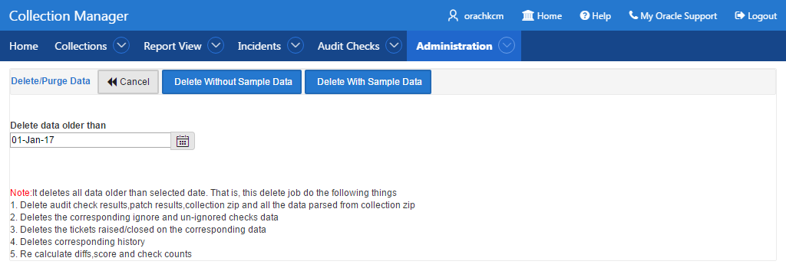
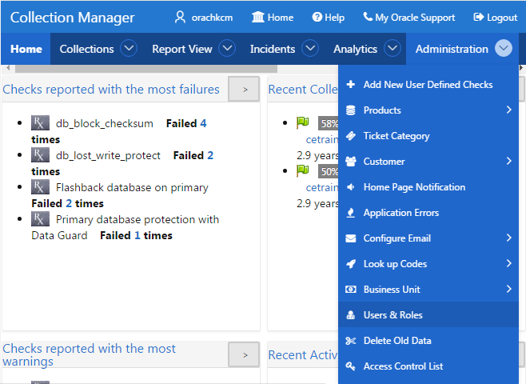
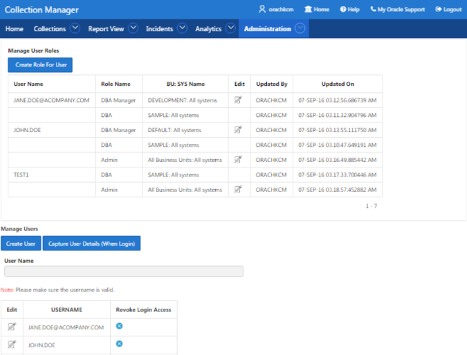
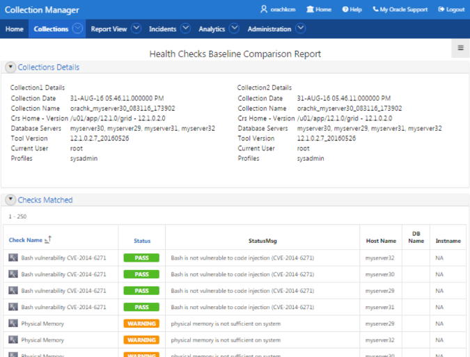
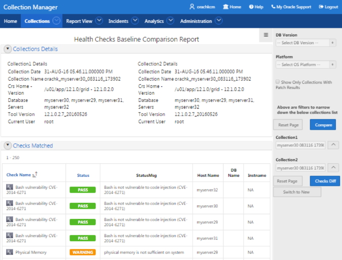
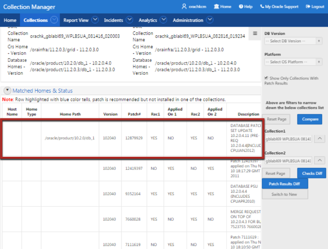
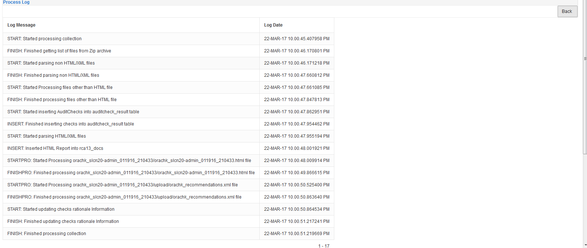

1.9 Oracle Health Check Collections Manager for Oracle Application Express 5.0
Oracle Health Check Collections Manager is a companion application to Oracle ORAchk and Oracle EXAchk that gives you an enterprise-wide view of your health check collection data.
- Scope and Supported Platforms
Review the scope and platforms supported for Oracle Health Check Collections Manager. - Prerequisites
Review the list of Oracle Health Check Collections Manager prerequisites. - Installation
Follow the installation procedures sequentially to install Oracle Health Check Collections Manager. - Upgrading Oracle Health Check Collections Manager Application
Oracle ORAchk or Oracle EXAchk automatically upgrades new versions of the Oracle Health Check Collections Manager. - Getting Started
Familiarize yourself with the Oracle Health Check Collections Manager Application. - Oracle Health Check Collections Manager Application Features
Familiarize yourself with the features of Oracle Health Check Collections Manager Application. - Uploading Collections Automatically
Use these procedures to configure Oracle ORAchk and Oracle EXAchk to automatically upload check results to the Oracle Health Check Collections Manager database. - Viewing and Reattempting Failed Uploads
Configure Oracle ORAchk and Oracle EXAchk to display and reattempt to upload the failed uploads. - Oracle Health Check Collections Manager Application Uninstallation
Anytime you can decommission Oracle Health Check Collections Manager Application setup. Follow these steps sequentially to uninstall the application leaving no residual files. - Troubleshooting Oracle Health Check Collections Manager
This topic describes how to troubleshoot Oracle Health Check Collections Manager.
1.9.1 Scope and Supported Platforms
Review the scope and platforms supported for Oracle Health Check Collections Manager.
Note:
There are two separate versions of Oracle Health Check Collections Manager respectively for Oracle Application Express 4.2 and Oracle Application Express 5.x.
The scope and supported platforms are applicable to:
-
Oracle Health Check Collections Manager for Oracle Application Express 5.x
-
Oracle Health Check Collections Manager for Oracle Application Express 4.2
It is difficult to run health checks and maintain collection data when you have many systems to manage. Oracle Health Check Collections Manager gives you an enterprise-wide view of your health check collection data.
Oracle Health Check Collections Manager:
-
Provides a dashboard to track your collection data in one easy-to-use interface
-
Displays collection data based on Business Units and time
-
Serves as an enterprise-wide repository of all collections
-
Uploads collection automatically
Oracle Health Check Collections Manager is fully supported through Oracle Support Services on all Editions (SE1, SE, and EE) of the Oracle Database 11.1.0.7 or later with a valid Oracle Database Technical Support agreement.
Use Oracle Application Express 4.2 or later with Oracle database 11g R1, 11g R2 and 12c R1. Express Edition (XE) is supported only through the Oracle Technology Network (OTN) discussion forums and not through Oracle Support Services.
1.9.2 Prerequisites
Review the list of Oracle Health Check Collections Manager prerequisites.
Note:
There are two separate versions of Oracle Health Check Collections Manager respectively for Oracle Application Express 4.2 and Oracle Application Express 5.x.
The prerequisites are applicable to:
-
Oracle Health Check Collections Manager for Oracle Application Express 5.x
-
Oracle Health Check Collections Manager for Oracle Application Express 4.2
-
Oracle Database 11.1.0.7.0 or later.
-
Oracle Application Express 4.2.0 or later.
1.9.3 Installation
Follow the installation procedures sequentially to install Oracle Health Check Collections Manager.
Note:
Upgrade Oracle Health Check Collections Manager directly from the Oracle ORAchk or Oracle EXAchk tool.
- Configuring Oracle Application Express and Creating a Workspace
Configure Oracle Application Express and create a workspace. - Install Oracle Health Check Collections Manager Application
To install Oracle Health Check Collections Manager, follow these procedures. - Log in to Oracle Health Check Collections Manager Application
To log in to Oracle Health Check Collections Manager, follow these procedures.
Related Topics
1.9.3.1 Configuring Oracle Application Express and Creating a Workspace
Configure Oracle Application Express and create a workspace.
- Create a workspace.
- Log in to Oracle Application Express administration services.
Note:
The URLs used for accessing the Oracle Health Check Collections Manager application depend on how Oracle Application Express was deployed initially.
-
If you have configured Oracle Application Express using the Oracle HTTP Server with
mod_plsql, then specify the URL as follows:http://host:port/pls/apex/apex_admin -
If you have configured Oracle Application Express the Oracle XML DB HTTP listener with the embedded PL/SQL gateway, then specify the URL as follows:
http://host:port/apex/apex_adminFor example:http://dbserver.domain.com:8080/apex/apex_admin
-
The default schema user for Oracle Application Express administration services in the Oracle database is
ADMIN. -
The password is the one you gave at the time of configuring the Oracle Application Express component in the Oracle database.
-
- Log in to Oracle Application Express administration services.

- Log in to the Workspace
Log in to Application Express admin user workspace using these procedures. - Application Express User Accounts
Application Express provides three types of users, namely, workspace administrators, developers, and end users.
Related Topics
Parent topic: Installation
1.9.3.1.1 Log in to the Workspace
Log in to Application Express admin user workspace using these procedures.
1.9.3.1.2 Application Express User Accounts
Application Express provides three types of users, namely, workspace administrators, developers, and end users.
Table 1-15 Application Express Types of Users
| Type of User | Description |
|---|---|
|
Workspace administrators |
Workspace administrators can also create and edit user accounts, manage groups, and manage development services. |
|
Developers |
Developers can create and modify applications and database objects. |
|
End users |
End users are non-administrative who have no development privileges and can only access applications that do not use an external authentication scheme. For the Oracle Health Check Collections Manager Application, almost all the users fall into this category. A special role within the Oracle Health Check Collections Manager Application, DBA Managers, and the DBAs manage all application users. |
To grant access to the Oracle Health Check Collections Manager Application for non-administrative users, log in to the Workspace as an administrator.
1.9.3.2 Install Oracle Health Check Collections Manager Application
To install Oracle Health Check Collections Manager, follow these procedures.
Parent topic: Installation
1.9.3.3 Log in to Oracle Health Check Collections Manager Application
To log in to Oracle Health Check Collections Manager, follow these procedures.
- Delete the sample data using one of two methods:
Administration > Delete Old Data: Select a date and then click Delete With Sample Data.
Figure 1-55 Oracle Health Check Collections Manager - Delete Old Data

Description of "Figure 1-55 Oracle Health Check Collections Manager - Delete Old Data"Configure Email > Configure Mail Server/Notification/Purge Job: click Click To Purge SampleData.
Figure 1-56 Oracle Health Check Collections Manager - Purge Sample Data

Description of "Figure 1-56 Oracle Health Check Collections Manager - Purge Sample Data"
Parent topic: Installation
1.9.4 Upgrading Oracle Health Check Collections Manager Application
Oracle ORAchk or Oracle EXAchk automatically upgrades new versions of the Oracle Health Check Collections Manager.
Oracle Health Check Collections Manager has a new easier to navigate interface based on the Oracle Application Express (APEX) 5 theme. This new interface is only available if you have APEX 5 installed on your database. Oracle ORAchk and Oracle EXAchk continue to include the APEX 4 based Oracle Health Check Collections Manager application. However, all new functionality in the new releases goes only into the APEX 5 Oracle Health Check Collections Manager application.
Upgrade Oracle Health Check Collections Manager application from the Oracle ORAchk or Oracle EXAchk tool. Oracle Health Check Collections Manager application is upgraded to the latest version of whichever application your database can support.
If you have APEX 5, then you get the new theme interface.
Note:
There are two separate versions of Oracle Health Check Collections Manager respectively for Oracle Application Express 4.2 and Oracle Application Express 5.x.
The upgrade procedures are applicable to:
-
Oracle Health Check Collections Manager for Oracle Application Express 5.x
-
Oracle Health Check Collections Manager for Oracle Application Express 4.2
1.9.5 Getting Started
Familiarize yourself with the Oracle Health Check Collections Manager Application.
- Incident Ticket System Lookup Lists and Seed Data
Oracle Health Check Collections Manager Application provides a basic Incident Ticket system. - Access Control System
Limit and control access based on functional roles. - Oracle Health Check Collections Manager Application Administration
To restrict authorized users alone to access the application, grant sufficient privileges to different roles. - Selectively Capturing Users During Login
By default, Oracle Health Check Collections Manager captures details of the users logging in using LDAP authentication, and assigns them DBA role. - Configuring Email Notification System
The Oracle Health Check Collections Manager Application provides an email notification system that users can subscribe to. - Bulk Mapping Systems to Business Units
If you have many systems, then you can quickly map those systems to business units in Oracle Health Check Collections Manager using an XML bulk upload. - Purging Old Collections
By default, Oracle Health Check Collections Manager runs a purge job daily, removing data older than three months.
1.9.5.1 Incident Ticket System Lookup Lists and Seed Data
Oracle Health Check Collections Manager Application provides a basic Incident Ticket system.
Oracle Health Check Collections Manager Application is deployed with seed data for the lookup lists used for data entry for incident tickets:
-
Products
-
Category
-
Customer Contacts
-
Notifications
-
Status Codes
-
Incident Severity
-
Incident Urgency
The seed data is values that are commonly used. Add or change the seed data provided with the application. However, you must have administrator privileges to manage seed data through the Administration tab.
To access the Administration tab, click the gear icon at the upper-right corner.
Parent topic: Getting Started
1.9.5.2 Access Control System
Limit and control access based on functional roles.
By default, the Access Control system is disabled. If Access Control is disabled, then all authenticated users are granted administrator privileges and can access all application features. To assign one or more roles to the end users, manage access controls through the Administration tab. You can enable the following three functional roles available in the Oracle Health Check Collections Manager.
-
Admin: Admin role user can also be a Workspace Administrator for the application and it depends on your functional roles requirements.
-
DBA Manager
-
DBA
Assign role to the users after configuring the Access Control system.
Parent topic: Getting Started
1.9.5.3 Oracle Health Check Collections Manager Application Administration
To restrict authorized users alone to access the application, grant sufficient privileges to different roles.
Admin
Any end user who is granted an admin role by the workspace administrator has administrator privileges within the Collection Manager application.
http://hostname:port/apex/f?p=ApplicationID
http://hostname:port/pls/apex/f?p=ApplicationID)http://dbserver.domain.com:8080/apex/f?p=103As an admin user, you must see the Administration menu at the upper-right corner.
-
Following are the admin user privileges:
-
Add or revoke admin privileges
-
Define Business Units (BU)
-
Assign DBA Manager role to users
-
Assign DBA Managers to one or more BUs
-
Assign systems to BUs (a system can belong to one BU)
-
Assign DBAs to DBA Managers
-
Assign systems to DBAs
-
Ignore any check on a collection, BU, or system
-
Create and assign incidents to any user
-
Manage all incidents
-
-
Only Admin role can edit any section under the Administration menu.
-
The administrators must configure data based on their requirements under the administration menu to prepare for the wider usage of the application. This is a one-time activity, however, change the configuration over time to suit your needs.
Examples of the configuration data that you need set up are:
-
Products
-
Customers (internal designations for workgroups)
-
Categories
-
Notifications
-
Status codes
-
Manage Email Server and Job details
-
Manage Notifications
-
Incident Severity
-
Urgency
-
Manage User Roles and Assign systems to users
-
Business Units (BUs)
-
Assign systems to BUs
-
DBA Manager
Any user who is granted the DBA Manager role.
http://hostname:port/apex/f?p=ApplicationID
http://hostname:port/pls/apex/f?p=ApplicationID)The DBA Managers see an Administration menu at the upper-right corner of the application.
Figure 1-58 Oracle Health Check Collections Manager - DBA Manager Administration
Description of "Figure 1-58 Oracle Health Check Collections Manager - DBA Manager Administration"
Click Users and Roles.
Figure 1-59 Oracle Health Check Collections Manager - DBA Manager - Manage User Roles
Description of "Figure 1-59 Oracle Health Check Collections Manager - DBA Manager - Manage User Roles"
The DBA Manager can edit user roles, or assign systems to other users in the DBA Manager BU. The scope of a DBA Manager is an entire BU, or multiple BUs.
-
Assign DBAs to BUs the manager manages
-
Assign DBAs to one or more systems
-
Ignore any check on a collection, BU, or system
-
Create incidents for any system
-
Assign incidents to DBAs that manage the systems in their BUs
-
Manage any incidents for systems within their assigned BUs
DBA
Any user who is granted the DBA role.
http://hostname:port/apex/f?p=ApplicationID
http://hostname:port/pls/apex/f?p=ApplicationID)The DBA must see the Administration menu at the upper-right corner of the application.
Any end user who is granted administrator role by the workspace administrator has administrator privileges within the Oracle Health Check Collections Manager application.
Figure 1-60 Oracle Health Check Collections Manager - DBA Manager Administration
Description of "Figure 1-60 Oracle Health Check Collections Manager - DBA Manager Administration"
Click Users and Roles.
DBA has read-only access.
Figure 1-61 Oracle Health Check Collections Manager - DBA Manager - Manage User Roles
Description of "Figure 1-61 Oracle Health Check Collections Manager - DBA Manager - Manage User Roles"
-
Cannot manage Access Control List
-
Manage systems within one or more BUs, if the DBA Managers of those BUs assign them
-
Ignore any check on a collection or system they manage
-
Manage any incidents assigned to them
Parent topic: Getting Started
1.9.5.4 Selectively Capturing Users During Login
By default, Oracle Health Check Collections Manager captures details of the users logging in using LDAP authentication, and assigns them DBA role.
However, you can disable automatic capture and re-enable anytime later. If you disable, then you must manually create users and assign them roles.
Parent topic: Getting Started
1.9.5.5 Configuring Email Notification System
The Oracle Health Check Collections Manager Application provides an email notification system that users can subscribe to.
-
Configuring the email server, port, and the frequency of email notifications.
-
Registering the email address
Note:
Only the administrators have the privilege to manage Email Notification Server and Job details.
- Log in to Oracle Health Check Collections Manager, and then click Administration > Configure Email > Configure Email Server/Notification/Purge tab.
Figure 1-64 Oracle Health Check Collections Manager - Configure Email Server
Description of "Figure 1-64 Oracle Health Check Collections Manager - Configure Email Server"
Note:
Manage Notifications section under the Administration menu is available for all users irrespective of the role.
If the ACL system is enabled, then the registered users receive notifications for the systems that they have access to. If the ACL system is not configured, then all registered users receive all notifications.
Depending on the selections, you made under Collection Notifications section, you receive an email with Subject: Collection Manager Notifications containing application URL with results.
Figure 1-66 Oracle Health Check Collections Manager - Sample Email Notification

Description of "Figure 1-66 Oracle Health Check Collections Manager - Sample Email Notification"
Under Comments column, click the Click here links for details. Click the respective URLs, authenticate, and then view respective comparison report.
Figure 1-67 Oracle Health Check Collections Manager - Sample Diff Report
Description of "Figure 1-67 Oracle Health Check Collections Manager - Sample Diff Report"
Parent topic: Getting Started
1.9.5.6 Bulk Mapping Systems to Business Units
If you have many systems, then you can quickly map those systems to business units in Oracle Health Check Collections Manager using an XML bulk upload.
Parent topic: Getting Started
1.9.5.7 Purging Old Collections
By default, Oracle Health Check Collections Manager runs a purge job daily, removing data older than three months.
To adjust or disable the collection purging frequency:
Figure 1-71 Oracle Health Check Collections Manager - Configure Purging
Description of "Figure 1-71 Oracle Health Check Collections Manager - Configure Purging"
Parent topic: Getting Started
1.9.6 Oracle Health Check Collections Manager Application Features
Familiarize yourself with the features of Oracle Health Check Collections Manager Application.
- Global Select Lists
Oracle Health Check Collections Manager Application provides an option to display data based on the select lists like Business Units, Systems, and Data for last periods of time. - Home Tab
Displays systems and their statuses, and recent activities of all users who has permission to access the application. - Collections Tab
Displays incidence information for each collection, and collection score for failed, warning, and failed checks. - Collections > Browse Sub Tab
Enables you to list individual checks based on filters set. - Collections > Compare Sub Tab
Compare tab enables you to compare audit check results and patch results. - Report View Tab
Provides a graphical representation of database checks, instance checks, home path checks, and system health checks. - Upload Collections Sub Tab
Provides an interface to manually upload a collection into Oracle Health Check Collections Manager Application and provides a list of uploaded collections and file details. - Tracking Support Incidents
The Incidents tab gives you a complete system for tracking support incidents. - Authoring User-Defined Checks
User-defined checks are checks written, tested, verified, and maintained by you that are specific to your environment.
1.9.6.1 Global Select Lists
Oracle Health Check Collections Manager Application provides an option to display data based on the select lists like Business Units, Systems, and Data for last periods of time.
All these select lists are global within the application and options available on starting of each tab.
-
Business Unit
-
System
-
Data interval
1.9.6.2 Home Tab
Displays systems and their statuses, and recent activities of all users who has permission to access the application.
-
Displays systems and their statuses in graphs with color coded green, orange, and red based on check results (passed, warning, and failed).
-
The Home tab provides an option to display the data based on select lists like Business Units and Data for last periods of time. There is also an option to filter the most failed/warned checks and recent collections based on system name.
-
The Most Failed Checks region displays information for the most frequently failed checks for all collections for the time period, Business Unit, or System selected, and displays the check name, fail count. There is a similar region for most warned checks.
-
The Recent Collections region displays brief information about recently uploaded collections based on time frame, Overall score with Fail, Warning, and Pass counts and a Status flag. Recent collections are automatically compared to the last collection from the same system, whenever it occurred, if there is one.
Status Flags are color-coded green, orange, or red based on the comparison between the recent collection and the last collection, if any.
-
GREEN: There is no difference at all between the two collections or one or more findings from the last collection improved from WARNING or FAIL to PASS or there was no earlier collection to compare with.
-
ORANGE: There were one or more regressions between the last collection and the most recent on a given system. In other words some findings transitioned in a negative way, for example, PASS to WARNING.
-
RED: There were one or more regressions between the last collection and the most recent on a given system. In other words some findings transitioned in a negative way, for example, PASS to FAIL.
-
-
Recent Activity in User Range shows recent activities by all users across all collections specific to the access role granted the user.
-
DBA role users can see everything that happens in the systems assigned to them.
-
DBA Manager role users can see everything within their Business Unit and the systems assigned to them.
-
Admin role user can see everything when there is a collection data uploaded in to the application.
-
1.9.6.3 Collections Tab
Displays incidence information for each collection, and collection score for failed, warning, and failed checks.
-
Displays all collections and allows you to filter the list of collections based on Business units and System. You can also filter based on Status flag. The list is also inherently filtered to those collections the user has access to, based on their assigned role.
-
Displays incident information for each collection indicated by Delta (Δ) color coded red, blue, and green based on ticket status. Click the delta symbol to raise a new ticket or alter the ticket for an entire collection.
-
RED (No Incident ticket exists): Click to create a new incident ticket for the collection or individual checks.
-
BLUE (An open Incident ticket exists): Click to open the incident ticket for editing.
-
GREEN (A closed Incident ticket exists): Click opens the closed incident ticket for viewing.
-
-
Collection Score is calculated based on failed, warning, and passed checks.
If a user raised a ticket for the collection, resolved the issues and the ticket is closed signifying the issues have all been resolved, then Oracle Health Check Collections Manager changes the collection score to 100%.
If a user raised a ticket for an individual check and if it is closed signifying that the finding has been resolved, then Oracle Health Check Collections Manager changes the status of the check as PASS and recalculates the collection score.
Collection Score is derived using following formula.
-
Every check has 10 points.
-
Failure deducts 10 points.
-
Warning deducts 5 points.
-
Info deducts 3 points.
-
-
A More Info link next to a collection indicates that the collection was manually uploaded into the application.
-
Click the linked collection name in the list to load the collection in the Browse tab.
1.9.6.4 Collections > Browse Sub Tab
Enables you to list individual checks based on filters set.
-
Set filters once the list of checks is created.
-
Create and alter incident tickets for individual audit check findings similar to as described in the Collections tab.
-
Select checks to ignore and to undo previously ignored checks. Select the check box beside the audit check and click Ignore Selected. Oracle Health Check Collections Manager marks them as FAIL-IGNORED, indicating that the check had failed but is ignored.
Oracle Health Check Collections Manager ignores the checks for the entire level based on the level selected for ignoring.
To ignore selected failed checks, you must choose the ignore type from the following list:
-
Ignore from collection
-
Ignore from system
-
Ignore from a business unit
-
Ignore from all business units
Note:
The domain for ignoring checks is within the role assigned to the user.
All ignored checks are listed under the Ignored Checks tab. If needed, undo ignore.
To undo the selected Ignored checks, consider the type from the following list:
-
Undo ignore from collection
-
Undo ignore from system
-
Undo ignore from business unit
-
Undo ignore from all business units
Note:
The domain for undoing ignored checks is within the role assigned to the user.
-
1.9.6.5 Collections > Compare Sub Tab
Compare tab enables you to compare audit check results and patch results.
-
Compare Audit check Results
-
Compare the audit check findings from two different collections based on Business Unit, System, DB Version and Platform. The collections available for comparison are limited to filters set.
-
Compare collections from the same or different systems.
-
-
Compare Patch Results
-
Compare installed Oracle patches from two different collections. The comparison displays the difference between the two collections based on patch results.
-
Figure 1-75 Compare Sub Tab - Audit Checks Diff
Description of "Figure 1-75 Compare Sub Tab - Audit Checks Diff"
Figure 1-76 Compare Sub Tab - Patch Results Diff
Description of "Figure 1-76 Compare Sub Tab - Patch Results Diff"
Note:
Row highlighted indicates that a patch is recommended, but it is not installed in either of the collections.
1.9.6.6 Report View Tab
Provides a graphical representation of database checks, instance checks, home path checks, and system health checks.
-
Provides a printable view option to print the graphical summary of system collection
-
Displays separate graphical summary view for database checks, instance checks, and home path checks breakup based on check type and check status in collection
-
Displays system health check details based on status and check type in collection

1.9.6.7 Upload Collections Sub Tab
Provides an interface to manually upload a collection into Oracle Health Check Collections Manager Application and provides a list of uploaded collections and file details.
These manually uploaded collections are unzipped and their data imported into the framework as if they had been uploaded at runtime when the tool was run. Therefore, even if the tool is not configured for automatic upload into the Oracle Health Check Collections Manager Application, you can always upload collections manually.
Note:
Using a combination of tables and environment variables, you can automate the process of uploading collections into the database hosting the Oracle Health Check Collections Manager Application at runtime.
1.9.6.8 Tracking Support Incidents
The Incidents tab gives you a complete system for tracking support incidents.
-
Specify contact details of each customer, products and categories, and then set up values to limit status codes, severity, and urgency attributes for an incident
-
Raise a new ticket by clicking the Delta (Δ) symbol. Oracle Health Check Collections Manager displays the delta symbol only in the Collections and Browse tabs
-
The Browse tab enables you to create a new ticket on individual checks
-
The Collections tab enables you to create a single ticket for entire the collection
-
Delta (Δ) symbol is color coded red, blue, and green based on the ticket status
-
RED (No Incident ticket exists): Initiates the process to create a new incident ticket for the collection or individual checks
-
BLUE (An open Incident ticket exists): Opens the incident ticket for editing
-
GREEN (A closed Incident ticket exists): Opens the closed incident ticket for viewing
-
-
Track the progress of the ticket in an update area of the ticket, or add attachments and links to the incident
-
Use tags to classify incidents and use the resulting tag cloud in your reports
-
Incident access and management happen only within your access control range
Note:
Incident Tracking feature is a basic stand-alone system and it is not designed for integration with other commercial enterprise-level trouble ticketing systems.

Incident Tracking Features
-
Search options
-
Track and analyze incident tickets
-
Flexible and updateable incident status
-
Robust reporting
-
Link, Note, and File Attachments
-
Flexible Access Control (reader, contributor, administrator model)
- Incidents Tab
Create or edit incident tickets for individual checks or for an entire collection.
Related Topics
1.9.6.8.1 Incidents Tab
Create or edit incident tickets for individual checks or for an entire collection.
The statuses of each ticket is represented by icons with different colors. You can act upon by clicking those icons.
- Creating Incident Tickets
Follow these procedures to create incident tickets. - Editing Incident Tickets
Follow these procedures to edit incident tickets.
Parent topic: Tracking Support Incidents
1.9.6.8.1.1 Creating Incident Tickets
Follow these procedures to create incident tickets.
- Click the Delta (Δ) symbol colored RED.
- Add your ticket details.
- Click Next.
- Select the Product and Product Version.
- Click Next.
- Select the Urgency of the ticket.
- Select the Severity of the ticket.
- Select the Status of the ticket.
- Select the Category of the ticket.
- Enter a summary and description of the incident.
- Click Create Ticket.
Parent topic: Incidents Tab
1.9.6.8.1.2 Editing Incident Tickets
Follow these procedures to edit incident tickets.
- Click the Incident tab.
- Click Open Tickets.
- Click the ticket.
- Click Edit Ticket.
- Alter required details, click Apply Changes.
Note:
Click the delta symbol colored GREEN in the Collections or Browse tabs to edit incident tickets.Parent topic: Incidents Tab
1.9.6.9 Authoring User-Defined Checks
User-defined checks are checks written, tested, verified, and maintained by you that are specific to your environment.
Oracle supports the framework for creating and running user-defined checks, but not the logic of the checks. It is your responsibility to test, verify, author, maintain, and support these checks. The checks are run at runtime by the Oracle ORAchk and Oracle EXAchk script. Oracle ORAchk and Oracle EXAchk display the results of the user-defined checks in the User Defined Checks section of the HTML report.
The user-defined checks are stored in the Oracle Health Check Collections Manager schema and output to an XML file, which is co-located with the ORAchk script. When ORAchk 12.1.0.2.5 and later run on your system, the tool checks for the presence of this XML file. If the tool finds one, then by default the tool runs the checks contained therein. After running, the tool includes the results in the standard HTML report.
1.9.7 Uploading Collections Automatically
Use these procedures to configure Oracle ORAchk and Oracle EXAchk to automatically upload check results to the Oracle Health Check Collections Manager database.
To configure Oracle ORAchk and Oracle EXAchk to automatically upload check results, specify the connection string and the password to connect to the database. Oracle Health Check Collections Manager stores the connection details in an encrypted wallet.
Specifying Connection String and Password for Oracle ORAchk and Oracle EXAchk Check Results
–setdbupload option. For default options, use –setdbupload all. ./orachk -setdbupload all./exachk -setdbupload allOracle Health Check Collections Manager prompts you to enter the values for the connection string and password. Oracle Health Check Collections Manager stores these values in an encrypted wallet file.
Check Connection String and Password for Oracle ORAchk and Oracle EXAchk Check Results
–getdbupload option.$ ./orachk –getdbupload$ ./exachk –getdbuploadOracle ORAchk and Oracle EXAchk can automatically use the default values set in the RAT_UPLOAD_USER and RAT_ZIP_UPLOAD_TABLE environment variables.
Verifying Successful Connections to Oracle ORAchk and Oracle EXAchk Database for Check Results
–checkdbupload.$ ./orachk –checkdbupload$ ./exachk –checkdbuploadExample 1-23 Setting Up Database Uploads for Oracle ORAchk and Oracle EXAchk Check Results
$ ./orachk -setdbupload allEnter value for RAT_UPLOAD_CONNECT_STRING:(DESCRIPTION=(ADDRESS=(PROTOCOL=TCP)(HOST=myserver44.acompany.com)(PORT=1521))(CONNECT_DATA=(SERVER=DEDICATED)(SERVICE_NAME=orachkcm.acompany.com)))
Enter value for RAT_UPLOAD_PASSWORD:******
Database upload parameters successfully stored in orachk_wallet. orachk run will keep uploading the collections in database until it is unset using ./orachk -unsetdbupload all/env <variable name>
Note:
Use fully qualified address as in the example for the connect string. Do not use an alias from the tnsnames.ora file. Using the fully qualified address makes it possible to upload files without requiring the tnsnames.ora file name resolution is correct on all the servers where you run the tool.
Example 1-24 Reviewing Oracle ORAchk and Oracle EXAchk Database Check Result Uploads
$ ./orachk -getdbupload
RAT_UPLOAD_CONNECT_STRING = (DESCRIPTION=(ADDRESS=(PROTOCOL=TCP)(HOST=myserver44.acompany.com)(PORT=1521))(CONNECT_DATA=(SERVER=DEDICATED)(SERVICE_NAME=orachkcm.acompany.com)))
RAT_UPLOAD_PASSWORD = ******
RAT_UPLOAD_USER = ORACHKCM
RAT_ZIP_UPLOAD_TABLE = RCA13_DOCS
Example 1-25 Checking Oracle ORAchk and Oracle EXAchk Check Result Uploads
$ ./orachk -checkdbupload
Configuration is good to upload result to database.
At the end of health check collection, Oracle ORAchk and Oracle EXAchk check if the required connection details are set (in the wallet or the environment variables). If the connection details are set properly, then Oracle ORAchk and Oracle EXAchk upload the collection results.
To configure many Oracle ORAchk and Oracle EXAchk instances:
-
Create the wallet once with the
-setdbupload alloption, then enter the values when prompted. -
Copy the resulting wallet directory to each Oracle ORAchk and Oracle EXAchk instance directories.
You can also set the environment variable RAT_WALLET_LOC to point to the location of the wallet directory.
-
RAT_UPLOAD_USER: Controls which user to connect as (default isORACHKCM). -
RAT_UPLOAD_TABLE: Controls the table name to store non-zipped collection results in (not used by default). -
RAT_PATCH_UPLOAD_TABLE: Controls the table name to store non-zipped patch results in (not used by default). -
RAT_UPLOAD_ORACLE_HOME: ControlsORACLE_HOMEused while establishing connection and uploading.By default, the
ORACLE_HOMEenvironment variable is set to the Oracle Grid Infrastructure Grid home that Oracle ORAchk and Oracle EXAchk discover.
RCA13_DOCS: is not configurable to use Oracle Health Check Collections Manager as this is the table Oracle Health Check Collections Manager looks for.
RAT_UPLOAD_TABLE and RAT_PATCH_UPLOAD_TABLE: are not used by default because the zipped collection details are stored in RCA13_DOCS.
If you are using your own custom application to view collection results, then configure RAT_UPLOAD_TABLE and RAT_PATCH_UPLOAD_TABLEvariable.
$ ./orachk -setdbupload all$ ./exachk -setdbupload allThis prompts you for and set the RAT_UPLOAD_CONNECT_STRING and RAT_UPLOAD_PASSWORD, then use
$ ./orachk -setdbupload RAT_PATCH_UPLOAD_TABLE,RAT_PATCH_UPLOAD_TABLE$ ./exachk -setdbupload RAT_PATCH_UPLOAD_TABLE,RAT_PATCH_UPLOAD_TABLENote:
RAT_UPLOAD_CONNECT_STRING, then enclose the values in double quotes. For example:export RAT_UPLOAD_CONNECT_STRING="(DESCRIPTION=(ADDRESS=(PROTOCOL=TCP)(HOST=myserver.example.com)(PORT=1521))(CONNECT_DATA=(SERVER=DEDICATED)(SERVICE_NAME=myservice.example.com)))"1.9.8 Viewing and Reattempting Failed Uploads
Configure Oracle ORAchk and Oracle EXAchk to display and reattempt to upload the failed uploads.
Values are stored in the collection_dir/outfiles/check_env.out file to record if the previous database upload was successful or not.
DATABASE_UPLOAD_SETUP=1
DATABASE_UPLOAD_STATUS=0
Oracle ORAchk and Oracle EXAchk -checkfaileduploads
To view failed collections, use the -checkfaileduploads option:
./orachk -checkfaileduploads./exachk -checkfaileduploads$ ./orachk -checkfaileduploads
List of failed upload collections
/home/oracle/orachk_myserver_042016_232011.zip
/home/oracle/orachk_myserver_042016_231732.zip
/home/oracle/orachk_myserver_042016_230811.zip
/home/oracle/orachk_myserver_042016_222227.zip
/home/oracle/orachk_myserver_042016_222043.zip
Oracle ORAchk and Oracle EXAchk -uploadfailed
To reattempt collection upload, use the -uploadfailed option:
./orachk -uploadfailed all|list of failed collections./exachk -uploadfailed all|list of failed collections./orachk -uploadfailed "/home/oracle/orachk_myserver_042016_232011.zip, /home/oracle/orachk_myserver_042016_231732.zip"Note:
You cannot upload collections uploaded earlier because of the SQL unique constraint.
1.9.9 Oracle Health Check Collections Manager Application Uninstallation
Anytime you can decommission Oracle Health Check Collections Manager Application setup. Follow these steps sequentially to uninstall the application leaving no residual files.
- Deleting Oracle Health Check Collections Manager Application
You need administrative privileges to uninstall Oracle Health Check Collections Manager Application. - Deleting Workspace Admin
You need administrative privileges to delete a workspace. There may exist one or more workspaces so be cautious while deleting workspaces.
1.9.9.1 Deleting Oracle Health Check Collections Manager Application
You need administrative privileges to uninstall Oracle Health Check Collections Manager Application.
After successful uninstallation, application definition and the supporting objects are deleted from the hosting database.
1.9.9.2 Deleting Workspace Admin
You need administrative privileges to delete a workspace. There may exist one or more workspaces so be cautious while deleting workspaces.
- Log in to Oracle Application Express.
- Click Manage Workspaces.
- Under Workspace Reports, click Existing Workspaces, and check the Workspace name.
- Under Action, click Delete.
- Select the check box to confirm that you want to proceed with the removal and then click Next.
- Click Remove Workspace.
The install process displays the Workspace has been successfully removed message.
1.9.10 Troubleshooting Oracle Health Check Collections Manager
This topic describes how to troubleshoot Oracle Health Check Collections Manager.
Note:
There are two separate versions of Oracle Health Check Collections Manager respectively for Oracle Application Express 4.2 and Oracle Application Express 5.x.
The troubleshooting procedures are applicable to:
-
Oracle Health Check Collections Manager for Oracle Application Express 5.x
-
Oracle Health Check Collections Manager for Oracle Application Express 4.2
-
If you see any error like,
error at line 13: PLS-00201: identifier 'UTL_SMTP' must be declaredin the Installation Summary, then grant execute onUTL_SMTPprivilege to the parsing schema or workspace owner. -
If there is a requirement to download files from within the Oracle Health Check Collections Manager, then two more steps are required. These steps are NOT required to upload files into Oracle Health Check Collections Manager.
Before installing the Oracle Health Check Collections Manager, run the DDL mentioned below to re-create the Application Express built-in function
WWV_FLOW_EPG_INCLUDE_MOD_LOCALin theAPEX_XXXXXorFLOW_XXXXXXschema whichever is appropriate to your environment. After re-creating the function, ensure that it is in VALID state.CREATE OR replace FUNCTION Wwv_flow_epg_include_mod_local( procedure_name IN VARCHAR2) RETURN BOOLEAN IS BEGIN RETURN TRUE; ----- It should be always “RETURN TRUE” IF Upper(procedure_name) IN ( '' ) THEN RETURN TRUE; ELSE RETURN FALSE; END IF; END Wwv_flow_epg_include_mod_local;Once the Oracle Health Check Collections Manager is installed, run
RCA13_GET_DOCto enable file downloads:SQL> grant execute on RCA13_GET_DOC to public; -
Ensure that Oracle Application Express is installed successfully. If you have revoked any default system privileges from default Application Express users, then grant them again.
-
Ensure that all the Oracle Application Express related users are not locked and expired.
alter user ANONYMOUS account unlock; alter user XDB account unlock; alter user APEX_PUBLIC_USER account unlock; alter user FLOWS_FILES account unlock; -
If you see any issues in setting up email notifications, then verify your ACL permissions and privileges to the application schema on the SMTP mail server.
For example, to create ACL system and grant privileges to Application schema, do as follows:
BEGIN DBMS_NETWORK_ACL_ADMIN.CREATE_ACL(acl => 'apex1.xml', description => 'APEX ACL', principal => 'ORACHK CM USERNAME', is_grant => true, privilege => 'connect'); DBMS_NETWORK_ACL_ADMIN.ADD_PRIVILEGE(acl => 'apex1.xml', principal => 'ORACHK CM USERNAME', is_grant => true, privilege => 'resolve'); DBMS_NETWORK_ACL_ADMIN.ASSIGN_ACL(acl => 'apex1.xml', host => 'mailservername.com',lower_port=>10,upper_port=>1000); END; / COMMIT; -
If you see that any uploaded collection processing is not started or collection status is NEW for long time, then verify the database scheduler job
RCA13_PROCESS_DATAstatus and ensure that the job is enabled and running fine.select * from user_scheduler_jobs where job_name like 'RCA13_%'; select * from user_scheduler_running_jobs where job_name like 'RCA13_%'select * from user_scheduler_job_run_details where job_name like 'RCA13_%' order by log_date desc;RCA13_COL_%job is used for processing each collection by having unique job.This logger helps you in debugging the non-processing collections with reference likeselect * from rca13_log order by ins_date desc;You can view the logs by clicking Upload Collections > Log.
Figure 1-87 Upload Collections - Viewing Logs

Description of "Figure 1-87 Upload Collections - Viewing Logs" -
If you see that collection process is failed due to lack of space in Oracle Application Express tablespace and application schema tablespace, then increase the tablespace sizes as much as needed.